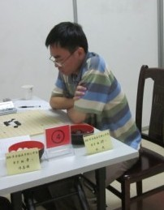

宁波战总结
首页
茗弈阁
#1 宁波战总结 作者：怪 发表时间：2010-6-16 18:10:24
总结：前面那个公园挺漂亮。比赛太累，尤其是对一些比较懒的选手。还有，下棋的还是有几个美女的。
［ 茗弈小刀 于 2010-6-16 18:16:16 时奖励此帖[金币加 20 威望加1］
［ 坏坏的闹闹 于 2010-6-23 23:04:37 时花20金币送鲜花一朵］
#2 Re:宁波战总结 作者：茗弈小刀 发表时间：2010-6-16 18:17:04
祝贺怪叔叔取得16名不错的成绩！照片呢？棋评呢？整一个吧！
#3 Re:宁波战总结 作者：怪 发表时间：2010-6-16 22:08:46
 棋也没什么好讲的，我就说下我输的吧。
棋也没什么好讲的，我就说下我输的吧。
输的第一盘 松月执黑对祁观
=======上图对应的爱五子棋谱代码如下，以便你拆解：========
h8h9h7h6i9g7f8i8g9h10j7g8f10e11f7f9h5g4g6e8
======================================================对手开松月，我不会3打，只好交换。给2打。
当前局面下，对手思考半天后防了上面，我一惊，这明显就是你死我活的变化了，再一想对手考虑半天定然是发现下面没杀了。我略一看，有点复杂，如果没杀那就交换出去好了。这比赛有点累人，自己也懒得算了。实际上j5后右边是有杀的，不过难走，实战估计可能需要不少于30分钟才能搞定。
说起来有点意思，j5一般是很多人的第一感觉点，所以我想对手肯定算清这一路了，于是换了个点做。
实战如下：
=======上图对应的爱五子棋谱代码如下，以便你拆解：========
h8h9h7h6i9g7f8i8g9h10j7g8f10e11f7f9h5g4g6e8i5j6k8i6k5j5k7k6l6l7i4j3j4m7f5g5d6f4e3
======================================================对手还剩几分钟，我做了个小v骗他在上面直接攻，不过被看到了，于是就输了。
输的第二盘 疏星执黑对谭鑫麟
因为怕中研究，我一直开疏星然后一直想对手交换，可是好像都知道疏星黑难过，没办法只好执黑了。
=======上图对应的爱五子棋谱代码如下，以便你拆解：========
h8h9j10i9i8g9j9j8h10k10f9k9k8j11i10h11i12g10g8h7l10l7i11i13l6f8g5
======================================================
其实2打少下，不过刚赢了一局，于是就接着开来玩玩。
前面定式忘了，花了30分钟算了个大概，看了下白，觉得没东西，于是27打算换下风格改控制。
此时对手好像还有50+分钟，多我20+分钟。然后对手开始算了。可能也觉得没头绪吧，时间慢慢拉平了。
=======上图对应的爱五子棋谱代码如下，以便你拆解：========
h8h9j10i9i8g9j9j8h10k10f9k9k8j11i10h11i12g10g8h7l10l7i11i13l6f8g5g13g11f12e11e7d6
======================================================后来慢慢的对手居然只剩几分钟了。。。我本来是想一边防一边控的，一看对手时间少了，好吧，一想也不知道超时后是怎么样的，那电子钟会响的是嘀嘀嘀还是嘟嘟嘟，于是决定临时改变策略想逼对手超时。于是防错挂了，看着那前面落后20+，后来领先10+的时间实在有点无语。。
=======上图对应的爱五子棋谱代码如下，以便你拆解：========
h8h9j10i9i8g9j9j8h10k10f9k9k8j11i10h11i12g10g8h7l10l7i11i13l6f8g5g13g11f12e11e7d6e12d13f13h13g12d12f14
======================================================输的第三盘 山月执黑对梅凡
梅凡大师考山月，我还纳闷怎么下这么多局都没人考我，听说以前经常有高手考新手必胜的，最后一盘我终于被考了。一个几年前我经常下的4。
=======上图对应的爱五子棋谱代码如下，以便你拆解：========
h8h7g10j9i8j8j7h9g9f10i6i10g8g7k8l9k9k6
======================================================算了很多9，发现没有简单杀。于是选了一个强点的9，后面一步一步算了。看来对手早有准备（废话），我用了30分钟对手才用了几分钟。愁，每次都这样很累人阿。一气之下，我决定穷尽下下面的交换。等我算好了，对手一个18直接把黑棋下面的味道冲散了，郁闷。只剩下十几分钟了，而对手还有40+，没办法，只好开始往上走。
=======上图对应的爱五子棋谱代码如下，以便你拆解：========
h8h7g10j9i8j8j7h9g9f10i6i10g8g7k8l9k9k6j11i11i13k11i12
======================================================22不好，给黑棋可以一直做下去的机会。不过我时间也不多了，后面的棋下的很快。
[iwzq]h8h7g10j9i8j8j7h9g9f10i6i10g8g7k8l9k9k6j11i11i
#4 Re:宁波战总结 作者：极地剑客 发表时间：2010-6-16 22:25:18
怪大师去比赛了所?发个PP鉴定一下?
#5 Re:宁波战总结 作者：怪 发表时间：2010-6-16 22:29:43
 pp都被mm们抢光了，木有了。
pp都被mm们抢光了，木有了。
#6 Re:宁波战总结 作者：裁决殿雪月 发表时间：2010-6-16 22:34:11
比较懒的选手
什么意思，请解答
#7 Re:Re:宁波战总结 作者：怪 发表时间：2010-6-16 22:40:28
比如对阵表都出来了也懒得去看，就算知道是自己开局也知道会开什么局，却连5打都得临场想。
其实要有好成绩还是要准备下的。
mm路过就留下张靓照吧！~
#8 Re:宁波战总结 作者：屏蔽 发表时间：2010-6-16 22:48:55
一天四轮，临场准备肯定不行
九轮比赛准备五到六个完全不同的变化。
#9 Re:宁波战总结 作者：怪 发表时间：2010-6-16 22:58:43
其实我很简单的，是我开就开疏星，对手只要不是开白优我就交换，要给个奇怪的4那就看我能不能多花点时间算完它了。
#10 Re:宁波战总结 作者：舍露里 发表时间：2010-6-16 23:26:51
以后我带你逛啊～～
#11 Re:Re:宁波战总结 作者：怪 发表时间：2010-6-16 23:37:50
 虽然觉得逛街是件无聊的事。。不过。。
虽然觉得逛街是件无聊的事。。不过。。
#12 Re:宁波战总结 作者：茗弈七夜 发表时间：2010-6-17 13:21:34
林大师很好很强大
#13 Re:宁波战总结 作者：锐 发表时间：2010-6-22 7:39:22
怪是林越吗
#14 Re:宁波战总结 作者：游戏人间 发表时间：2010-6-23 15:59:21
和牛牛那盘20后黑棋有四套杀。。。
#15 Re:Re:宁波战总结 作者：怪 发表时间：2010-6-23 19:48:43
引用：
原文由 游戏人间 发表于 2010-6-23 15:59:21 :
和牛牛那盘20后黑棋有四套杀。。。
大师帮忙摆一下哈，上班忙的没时间拆，只是大概看了一下。
#16 Re:宁波战总结 作者：坏坏的闹闹 发表时间：2010-6-23 20:53:46
 怪叔叔 我发你靓照啦 偷偷滴
怪叔叔 我发你靓照啦 偷偷滴
 ［ 茗弈求学 于 2010-6-24 11:46:24 时花20金币送鲜花一朵］
［ 茗弈宽容 于 2010-6-24 11:47:09 时花20金币送鲜花一朵］
#17 Re:Re:宁波战总结 作者：怪 发表时间：2010-6-23 22:02:21
 闹啊，这样可不合适阿，你发别人的东西前应该征求下别人的同意的。我还好了，要是别人很容易起争执的。
闹啊，这样可不合适阿，你发别人的东西前应该征求下别人的同意的。我还好了，要是别人很容易起争执的。
#18 Re:Re:Re:宁波战总结 作者：坏坏的闹闹 发表时间：2010-6-23 23:02:57
 噢噢。。明白了。。以后不会了。怪叔叔人真好 哈哈
噢噢。。明白了。。以后不会了。怪叔叔人真好 哈哈［此帖子已被 坏坏的闹闹 在 2010-6-23 23:03:32 编辑过］
#19 Re:宁波战总结 作者：白衣神童小剑魔 发表时间：2010-6-23 23:39:10
楼上好猥琐
#20 Re:宁波战总结 作者：坏坏的闹闹 发表时间：2010-6-24 1:18:29
 楼上是哪位。。。不会是盗版妹吧
楼上是哪位。。。不会是盗版妹吧
#21 Re:宁波战总结 作者：弱惜 发表时间：2010-6-24 9:04:11
祝贺怪第16,又懒得算，5手又临场想，成绩却这么好，看来太有才了！天赋呀！
#22 Re:宁波战总结 作者：茗弈宽容 发表时间：2010-6-24 11:48:40
 怪叔叔结果这么帅呀，怪偶像！
怪叔叔结果这么帅呀，怪偶像！
#23 Re:宁波战总结 作者：怪 发表时间：2010-6-25 22:19:43
说实话，其实他们真的比我强多了。。。搞不过很正常。
#24 Re:宁波战总结 作者：潜龙勿用吉 发表时间：2010-7-1 9:45:39
4套杀？？说来听听